2INF · Laboratorio professionale · giovedì 05/11/2026 · ore 10-11 · a coppie: un PC per coppia · si consegna la scheda con un bottone
Ora 3 · Windows 10, utenti e rete
La pagina viene aggiornata spesso durante la lezione: premi F5 per vedere la versione nuova.
Chi siete?
Scrivete i vostri nomi e il numero del banco: servono al cruscotto e alla scheda.
Il percorso di questa ora
Non dovete scegliere niente: partite dal passo con il bordo blu. Ogni passo fatto: premete «Ho fatto!».
Sei bloccato? Scrivi la domanda nella casella dell'assistente in fondo alla pagina: ti risponde subito. Alza la mano solo se il PC non funziona, se un pezzo si rompe o se qualcuno si fa male.
Parti dalla chiavetta di Windows 10
Metti la chiavetta nella porta USB. Accendi e premi F12: scegli la riga con USB. Se compare «Premi un tasto per avviare da…», premi un tasto qualsiasi.
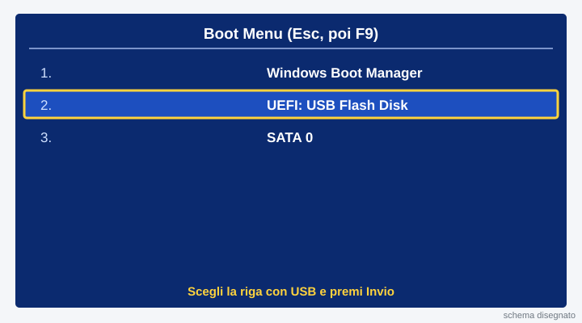
Lingua: Italiano, poi Installa
Lascia Italiano in tutte e tre le caselle. Premi Avanti, poi Installa.
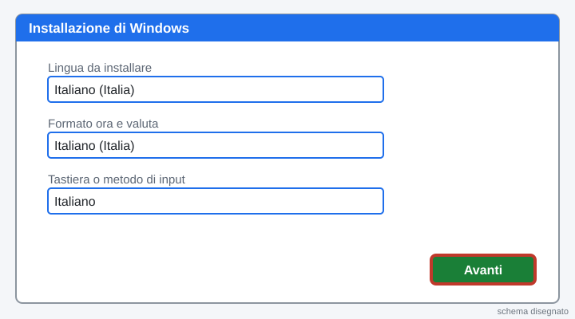
Non ho un codice Product Key
Clicca la scritta in basso Non ho un codice Product Key. Poi scegli l'edizione che dice il Professore (di solito Windows 10 Pro) e premi Avanti.
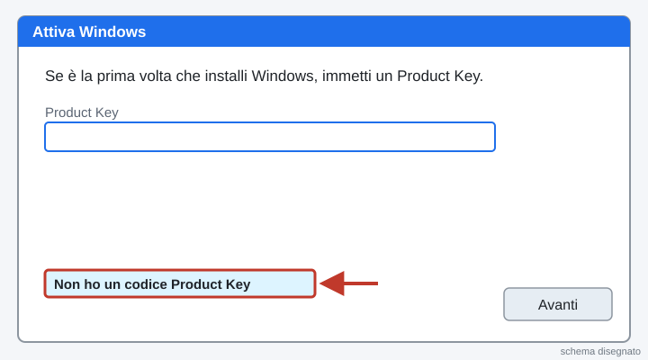
Accetta e scegli Personalizzata
Spunta Accetto le condizioni di licenza e premi Avanti. Poi scegli Personalizzata: installa solo Windows.
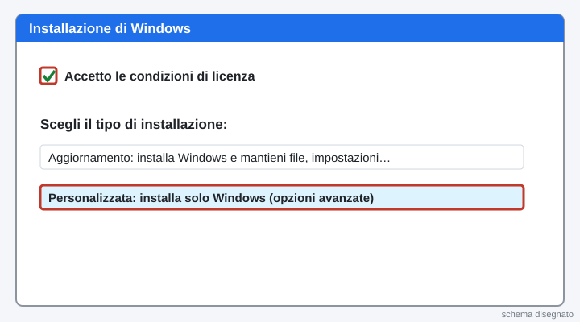
Scegli il disco
Questo è il PC del banco: si può cancellare tutto. Seleziona ogni partizione e premi Elimina. Resta «Unità 0 Spazio non allocato»: selezionala e premi Avanti.
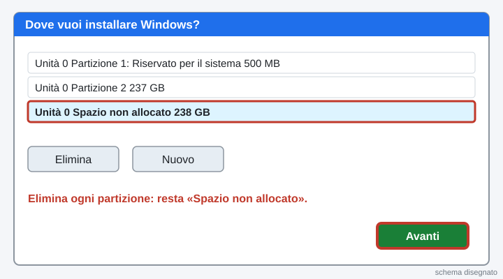
Aspetta: Windows copia i file
Windows copia i file e riavvia da solo (15-25 minuti). Non toccare niente. Intanto leggete la teoria qui sotto e fate il quiz.
Teoria da leggere mentre Windows copia i file
Utente amministratore: può installare programmi e cambiare tutto. Utente standard: usa il PC ma non può cambiare le impostazioni importanti. Si lavora di solito con l'utente standard: è più sicuro.
Account locale: il nome e la password stanno solo su questo PC. Non serve Internet.
Indirizzo IP: il «numero civico» del PC nella rete. Maschera (255.255.255.0): dice che le prime 3 parti sono la rete. Gateway: la porta verso fuori. DNS: la rubrica che trasforma un nome (google.com) in un IP.
Ping: manda un piccolo messaggio a un altro PC e aspetta la risposta. Se risponde, i due PC si parlano.
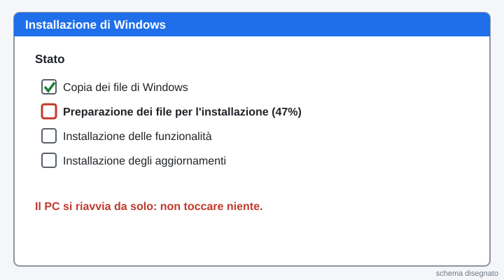
Parti dalla chiavetta di Linux Mint
Metti la chiavetta. Accendi e premi F12: scegli USB. Nel menu scegli Start Linux Mint.
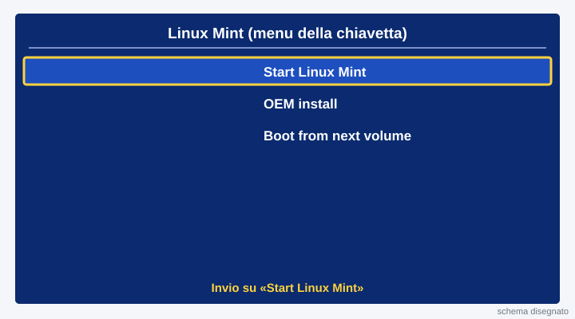
Doppio clic su «Install Linux Mint»
Sul desktop fai doppio clic sull'icona del disco Install Linux Mint. Scegli Italiano e la tastiera Italiano.
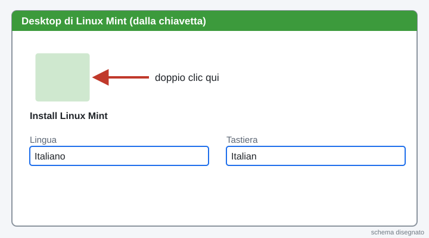
Cancella il disco e installa
Scegli Cancella il disco e installa Linux Mint. Premi Installa e poi Continua. Fuso orario: Roma.
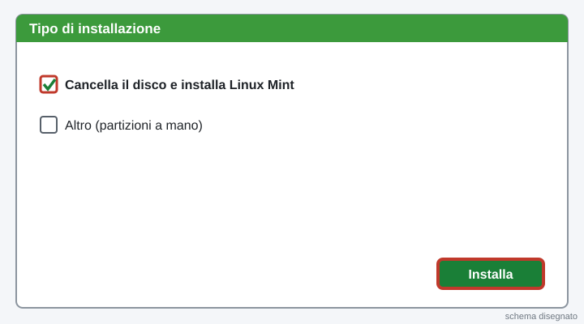
Il primo utente (amministratore)
Nome: tecnico. Nome del computer: PC-B e il numero del banco. Scegli la password che dice il Professore. Aspetta la copia e riavvia. Intanto leggete la teoria e fate il quiz.
Teoria da leggere mentre Windows copia i file
Utente amministratore: può installare programmi e cambiare tutto. Utente standard: usa il PC ma non può cambiare le impostazioni importanti. Si lavora di solito con l'utente standard: è più sicuro.
Account locale: il nome e la password stanno solo su questo PC. Non serve Internet.
Indirizzo IP: il «numero civico» del PC nella rete. Maschera (255.255.255.0): dice che le prime 3 parti sono la rete. Gateway: la porta verso fuori. DNS: la rubrica che trasforma un nome (google.com) in un IP.
Ping: manda un piccolo messaggio a un altro PC e aspetta la risposta. Se risponde, i due PC si parlano.
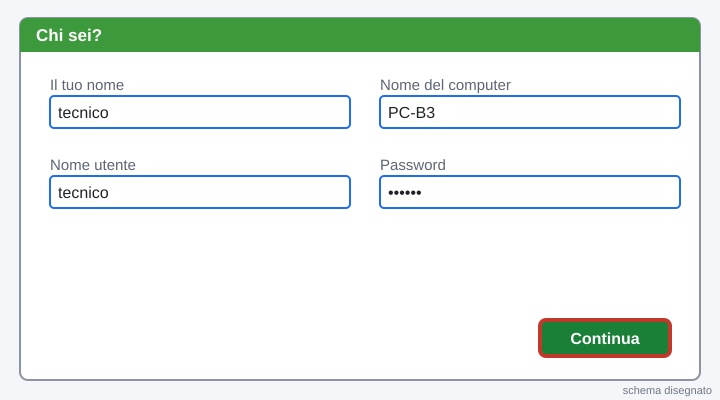
Quiz su Moduli (8 domande, servono 6 giuste)
Premi il bottone verde, rispondi e premi Invia. Puoi rifarlo: vale il migliore.
Apri il quiz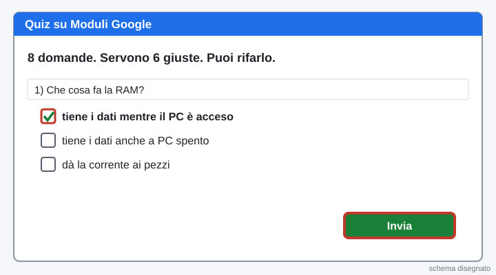
Primo avvio: Italia e tastiera Italiano
Scegli Italia e premi Sì. Tastiera Italiano, Sì. Alla seconda tastiera premi Ignora.
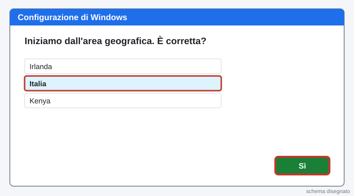
Non ho Internet
Il PC non è in rete: va bene. In basso a sinistra clicca Non ho Internet, poi Continua con configurazione limitata. (Nella versione Pro: «Configura per uso personale», poi «Account offline» e «Esperienza limitata».)
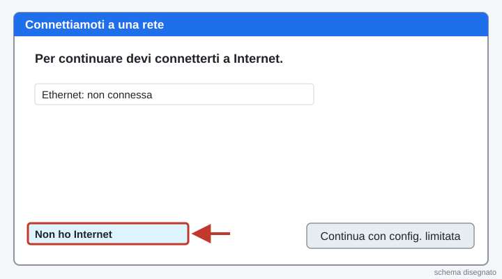
Account locale: l'utente tecnico
Così non serve un account Microsoft: è un account locale. Nome: tecnico. Questo primo utente è amministratore. Password: quella che dice il Professore. Poi 3 domande di sicurezza.
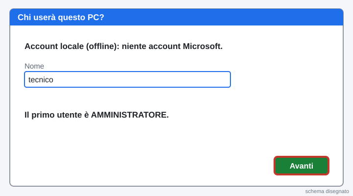
Privacy: tutto No, poi Accetta
Metti No a tutte le voci e premi Accetta. Se chiede Cortana: «Non ora». Aspetta il desktop.
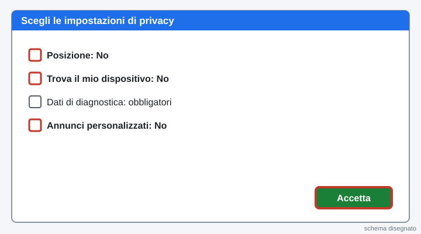
Fallo tuo: dai il nome al PC
Tasto destro su Start, Sistema. Premi Rinomina questo PC. Scrivi PC-B e il numero del banco (per esempio PC-B3). Riavvia più tardi.
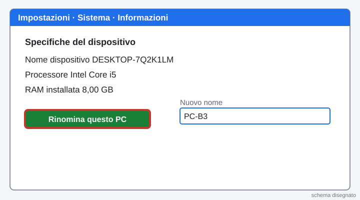
Strumento 1: crea l'utente standard
Start, Impostazioni (ingranaggio), Account, Famiglia e altri utenti. Premi Aggiungi un altro utente a questo PC.
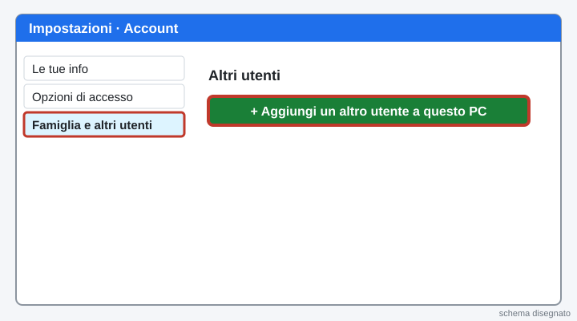
Utente senza account Microsoft
Clicca Non ho le informazioni di accesso di questa persona, poi Aggiungi un utente senza account Microsoft. Nome: studente. Password e domande. Avanti.
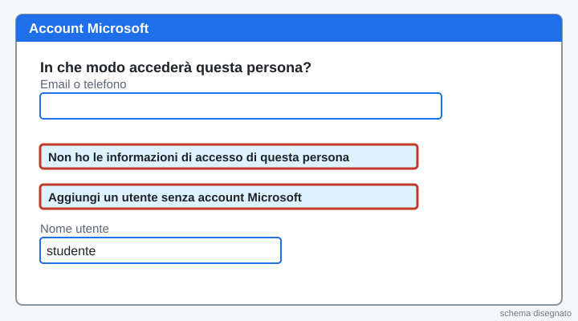
Controlla: amministratore e standard
Clicca studente, poi Cambia tipo di account: deve dire Utente standard. L'utente tecnico è Amministratore. Con l'edizione Pro lo vedi anche in Gestione computer (tasto destro su Start), Utenti e gruppi locali, Utenti.
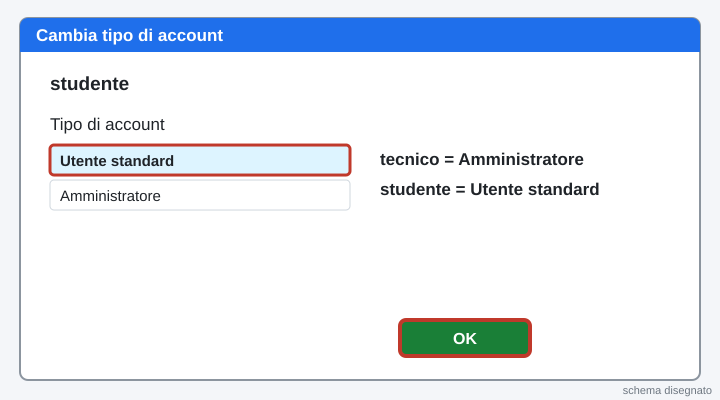
Strumento 1: crea l'utente standard
Menu, Utenti e gruppi. Premi Aggiungi. Tipo di account: Standard. Nome: studente. Poi imposta la password.
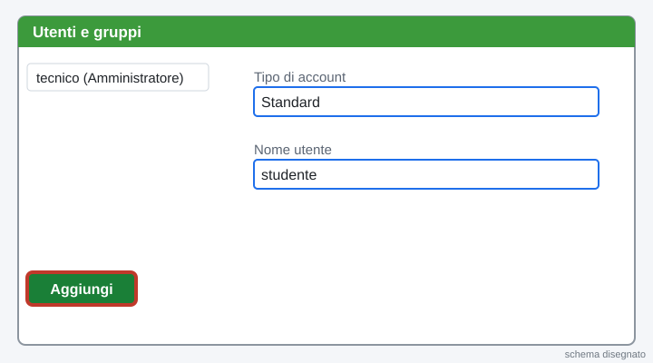
Strumento 2: Gestione attività
Premi insieme Ctrl + Maiusc + Esc. Clicca Più dettagli, poi la scheda Prestazioni. Leggi quanta Memoria (RAM) ha il PC: scrivila nella scheda.
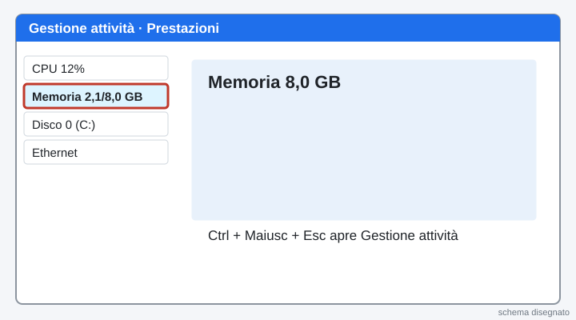
Strumento 3: Gestione dispositivi e Gestione disco
Tasto destro su Start, Gestione dispositivi: c'è un triangolo giallo? Scrivilo. Poi tasto destro su Start, Gestione disco: leggi quanti GB ha il disco C:.
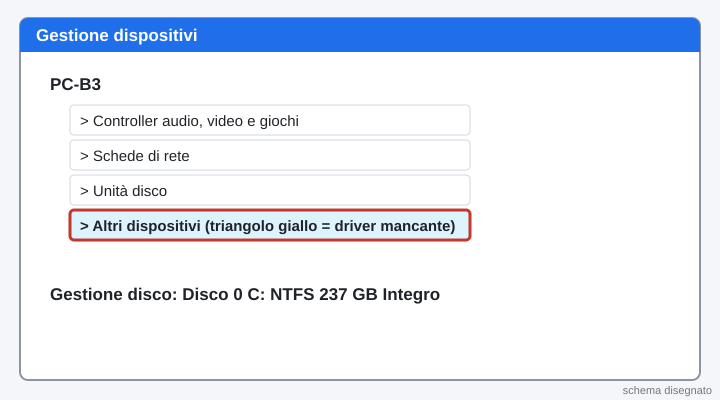
Strumento 2: Monitor di sistema
Menu, Monitor di sistema, scheda Risorse: leggi quanta memoria ha il PC. Poi apri Dischi e leggi quanti GB ha il disco.
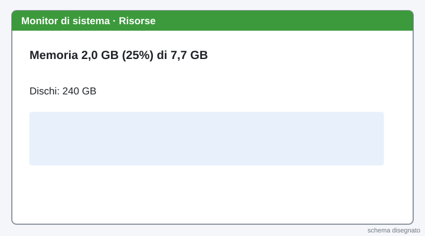
Capire l'indirizzo IP
Ogni PC ha un indirizzo IP. Nella stessa rete le prime 3 parti sono uguali, l'ultima è diversa. Il vostro IP è nel riquadro blu qui sotto: chiedete al PC accanto il suo e controllate che le prime 3 parti siano uguali.
Il vostro banco: ? (sceglietelo in «Chi siete?»)
Indirizzo IP: ?
Subnet mask: · Gateway: · DNS:
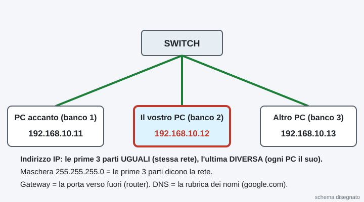
Apri le impostazioni della scheda di rete
Start, scrivi Pannello di controllo, Invio. Rete e Internet, Centro connessioni di rete e condivisione, a sinistra Modifica impostazioni scheda. Tasto destro su Ethernet, Proprietà.
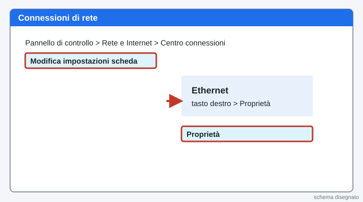
Scrivi l'IP a mano
Doppio clic su Protocollo Internet versione 4 (TCP/IPv4). Scegli Utilizza il seguente indirizzo IP e scrivi i valori del riquadro blu: indirizzo, subnet mask, gateway, DNS. OK, OK.
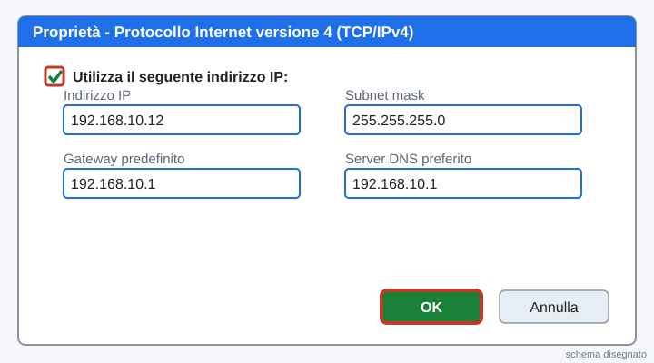
Lascia passare il ping
Windows blocca il ping. Start, scrivi Windows Defender Firewall con sicurezza avanzata, Invio. Regole connessioni in entrata: tasto destro su ogni riga Condivisione file e stampanti (Richiesta echo - ICMPv4 in entrata), Abilita regola.
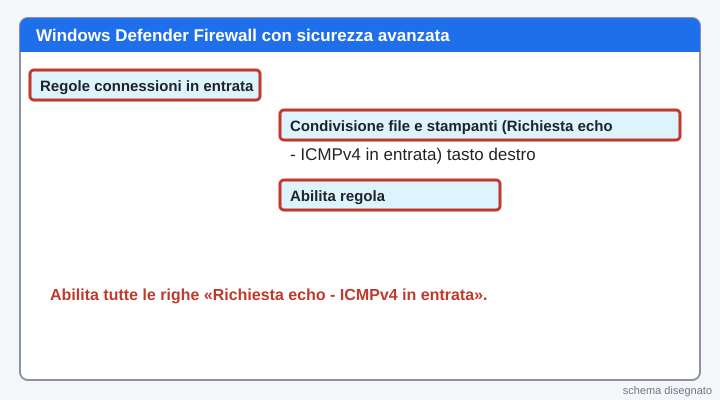
Scrivi l'IP a mano
Menu, Impostazioni di rete, Cablata, ingranaggio, scheda IPv4: metodo Manuale. Scrivi i valori del riquadro blu. Applica.
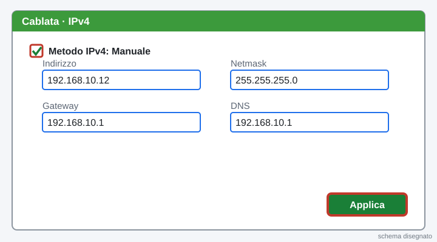
Il Professore vi mette in rete
Quando il Professore lo dice, collegate il cavo di rete del PC del banco allo switch.

Mostralo: ping al PC accanto
Scrivete nella scheda l'IP del PC accanto. Sul PC del banco: Start, scrivi cmd, Invio. Scrivi il comando del riquadro scuro qui sotto e premi Invio. «Risposta da…» = la rete funziona!
ping (scrivi nella scheda l'IP del PC accanto)In Linux Mint: menu, Terminale, stesso comando; per fermarlo premi Ctrl + C.
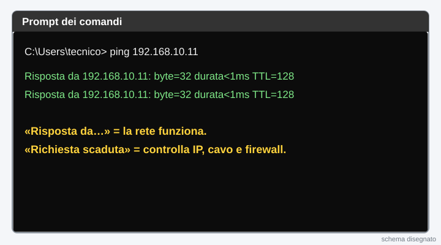
Impostazioni di base: Chrome ed estensioni
Apri la pagina Impostazioni di base e fai i suoi 5 passi: Chrome come browser predefinito e le estensioni dei file visibili. Poi torna qui.
Apri «Impostazioni di base» (si apre in una finestra nuova, poi torna qui)
Compila la scheda e mandala al prof
Compilate insieme la scheda qui sotto. Poi premi Manda al prof: un clic solo. Si apre la pagina «Consegna arrivata al prof».
Se il bottone non funziona: premilo di nuovo tra un minuto. La scheda resta salvata in questa pagina.

La pagina viene aggiornata spesso durante la lezione: premi F5 per vedere la versione nuova.